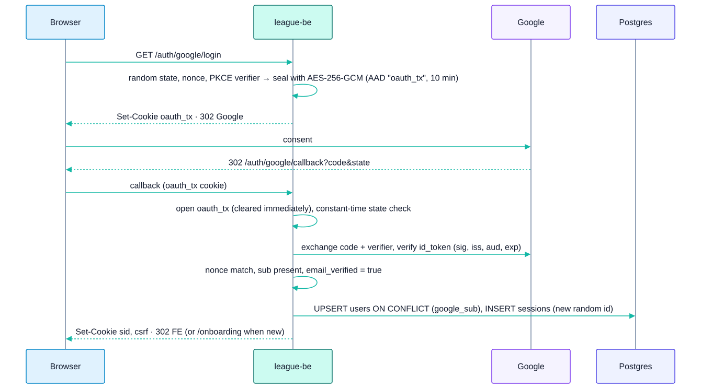

11 - Security, Roles and Compliance
Built as-built · Planned MVP · Target
11.1 Authentication (Builtleague-be/internal/auth)
Method: Google OAuth 2.0 / OIDC, Authorization Code + PKCE (S256) + state + nonce. Scopes are openid email profile.

| Property | Value |
|---|---|
| Session token | Opaque, 32 CSPRNG bytes (base64url), stored in sessions.id. No JWT, no refresh token |
| Absolute TTL | SESSION_TTL = 12 h (enforced in SQL on created_at) |
| Idle TTL | SESSION_IDLE_TTL = 30 min (enforced on last_seen_at, refreshed on every authenticated request) |
| Session fixation | A new session id is issued on every login |
| Cleanup | Sweep at startup and every 24 h |
| User lookup | By google_sub only, never by email |
| Errors | Redirect to /login?error=cancelled|login_failed|server_error |
11.1.1 Cookies
| Cookie | Prod name | HttpOnly | Path | Domain | Max-Age |
|---|---|---|---|---|---|
| Session | __Host-sid |
yes | / |
none (host-locked to be.) |
SESSION_TTL |
| CSRF | __Secure-csrf |
no (SPA reads it) | / |
mvip-league.com |
SESSION_TTL |
| OAuth transaction | __Secure-oauth_tx |
yes | /api/v1/auth/google |
none | 10 min |
- All three cookies are
SameSite=Lax. They are Secure and use the name prefixes only whenAPP_ENV=production; dev and staging use plain names (sid,csrf,oauth_tx) without Secure or Domain. - The FE reads
__Secure-csrfand falls back tocsrf. (league-feCLAUDE.mdand README still say__Host-csrf, which is stale; see Q35.)
11.1.2 CSRF
Double-submit on the whole /api/v1 subrouter. Unsafe methods need the csrf cookie to equal header X-CSRF-Token (constant-time compare). A missing cookie returns 40301; a mismatch returns 40302.
11.1.3 Onboarding / member link (Planned)
After first login, players.user_id is NULL for this user, so /me returns playerId: null and the FE routes to /onboarding:
- The user enters their 8-digit member ID.
GET /members/previewreturns a limitedMemberPreview(displayName, SL, team,alreadyLinked,linkedToMe).POST /me/linksetsplayers.user_id.
Privacy risk: member IDs are guessable (the seeded IDs are sequential), so the preview must reveal as little as possible and be rate-limited (Q31).
11.2 Roles and permissions
11.2.1 As-built data (Built seeded in 00001_init.sql)
| Permission code | PLAYER | CAPTAIN | ADMIN |
|---|---|---|---|
player.read |
Yes | Yes | Yes |
match.put_up |
— | Yes | Yes |
match.enter_score |
— | Yes | Yes |
match.submit |
— | Yes | Yes |
roster.manage |
— | Yes | Yes |
player.change_skill_level |
— | — | Yes |
season.manage |
— | — | Yes |
- Role resolution (Planned): a user may have several rows in
users_roles./mereturns the highest by ADMIN > CAPTAIN > PLAYER; no row means PLAYER (least privilege). - Enforcement today: none. No Go code reads these tables yet. The role middleware and permission checks come with
internal/league(Planned).
11.2.2 Action matrix (Planned MVP)
| Action | Player | Captain | Admin |
|---|---|---|---|
| View schedule, nights, rosters | Yes | Yes | Yes |
| Put up / enter result / submit night | — | Yesown night only | Yes any |
| Edit after submit | — | — | Yes |
| Add a paid member to own roster | — | Yes | Yes |
| Search players | — | — | Yes |
| Change SL (with reason) / see history | — | — | Yes |
| Transfer player | — | — | Yes |
Captain-owns-this-night: the role is CAPTAIN and the user's players.id equals captain_player_id of the home or away team. The server computes this once (viewerCanManage, viewerSide). The FE hiding a button is cosmetic, not a permission check.
11.2.3 Target Later roles
LEAGUE_OPERATOR and DIVISION_REP scoped per league/division (needs users_roles.scope_* or a separate grants table), and SCOREKEEPER as a lease holder for live scoring. These map onto the current ADMIN role until multi-league tenancy exists.
11.3 Transport and headers (Built)
| Control | Setting |
|---|---|
| CORS | Single origin https://www.mvip-league.com, credentials allowed, headers Accept, Content-Type, Origin, X-CSRF-Token |
| API headers | X-Content-Type-Options: nosniff, X-Frame-Options: DENY, Referrer-Policy: no-referrer, Cross-Origin-Opener-Policy: same-origin, CSP default-src 'none'; frame-ancestors 'none', HSTS 1 y + subdomains (prod) |
FE headers (vercel.json) |
nosniff, Referrer-Policy: strict-origin-when-cross-origin, X-Frame-Options: DENY, Permissions-Policy (camera, mic, geolocation off) |
| Request size | 1 MiB JSON limit, unknown fields rejected |
| Secrets | Env vars only; .env* excluded from the image. CI → GCP via Workload Identity Federation (no JSON keys) |
11.4 Known gaps
| Gap | Risk | Action |
|---|---|---|
| No rate limiting | Member IDs can be enumerated through the preview endpoint, and the login endpoints can be hammered | Redis or in-memory token bucket; Cloudflare rate-limit rules on /auth/* and /members/preview |
| No role middleware yet | All future league routes are unprotected until it exists | Build it with internal/league |
| Google consent screen in Testing mode | Only test users can sign in | Publish before the beta |
| Login CSRF (cookie forcing) not mitigated | Low | Accept for the MVP (documented in the auth README) |
audit_log missing |
Only SL changes are recorded (skill_level_history) |
Phase 2 table |
| Stale security docs | Engineers follow wrong cookie names | Fix the auth README and FE CLAUDE.md (Q35) |
11.5 Data integrity and anti-fraud
- SL changes go through
change_skill_level()(reason required, history row,changed_by). - Played matches keep their SL and race snapshots.
- Admins can edit after submit. Target Phase 2 adds
audit_logfor every such edit, plus dual-captain verification and dispute records (04 §8). - Target Phase 3: anomaly detection on innings and defensive-shot ratios (anti-sandbagging).
11.6 Privacy: Vietnam Decree 13/2023/ND-CP (PDPD)
| Requirement | Implementation |
|---|---|
| Consent | Consent at first login (purpose: league operations, stats publication); store the version and time (Target) |
| Minimization | Store only Google sub, email, name and avatar. Public views show name, member ID and stats only |
| Member preview | Reveal a display name only, never full contact data |
| Data subject rights | Export; deletion → pseudonymize the player and keep match history ("Former member #ID") |
| Location | GCP asia-southeast1 (Singapore). Document a cross-border transfer impact assessment |
| Breach | Notify within 72 h (runbook) |